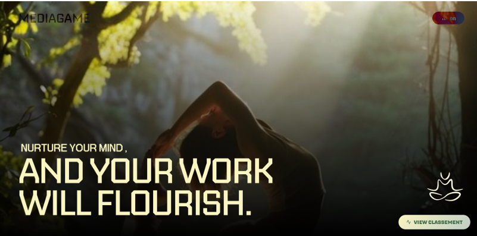

01
Harmonia – Plateforme IA
Développement d’une plateforme web d’analyse du bien-être des employés.
• API backend avec Django et PostgreSQL
• Analyse NLP (sentiments, crises, plaintes)
• Architecture RAG avec LLM pour un chatbot d’accompagnement
• Agent IA pour recommandations RH et envoi automatisé de notifications
